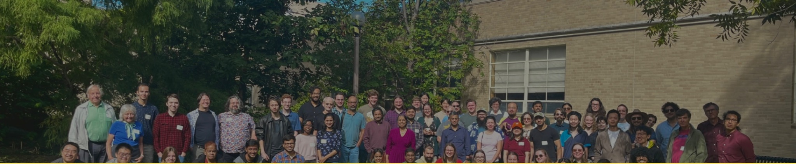

Upcoming Talks
Upcoming Talks
Scheduled speakers for the Fall 2026 KU Student Algebra Seminar. Talk titles, abstracts, and lecture materials will be added as they become available.

University of Kansas
Speaker information and announcements for the Student Algebra Seminar at the University of Kansas.
Scheduled speakers for the Fall 2026 KU Student Algebra Seminar. Talk titles, abstracts, and lecture materials will be added as they become available.
Completed Fall 2026 talks, including abstracts, references, and available lecture notes.
Speaker schedule and talk titles from the Spring 2026 KU Student Algebra Seminar.